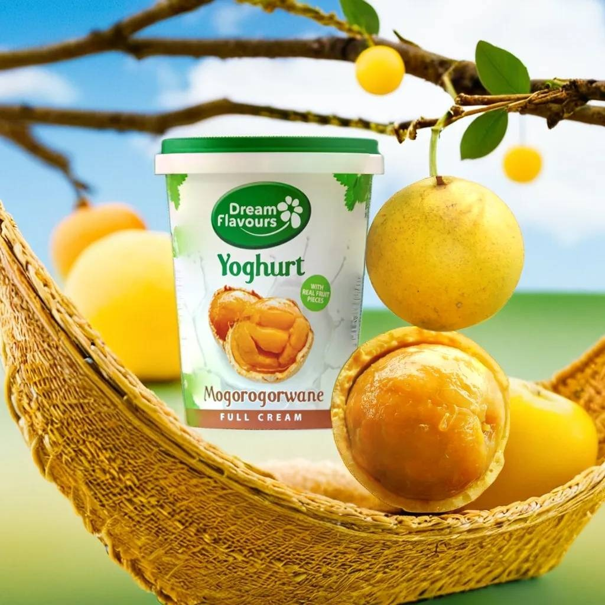
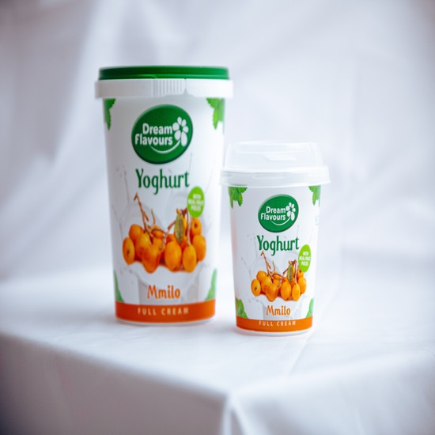

Our history
Rooted in tradition.
Dream Flavours was born from a love of the wild fruits that grow under the Southern African sun — fruits our grandparents harvested by hand and our children rarely know by name.
From a small kitchen in Gaborone, we set out to fold Morula, Mmilo, Lerotse and Mogorogorwane into thick, creamy yoghurt — preserving taste, place, and memory in every tub.
Company values
What we stand for
Authenticity
Real fruit, real recipes, real stories.
Community
We grow with the harvesters and farmers we work with.
Craft
Slow cultured, small batches, no shortcuts.
Why choose us
More than yoghurt.
- Made with indigenous Southern African fruits
- Full-cream, slow-cultured for richness
- Sourced from local harvesters
- No artificial flavours or colours

Our team
The people behind the flavour
Creative Director
Wendy
Wendy shapes the culture of Dream Flavours — the look, the feel, the soul of every tub. She translates the warmth of our kitchen and the heritage of our fruits into the brand you see today.
"Every flavour we craft is a memory worth keeping."